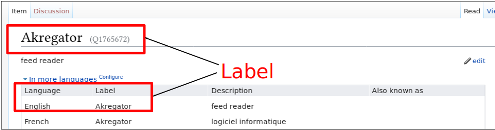
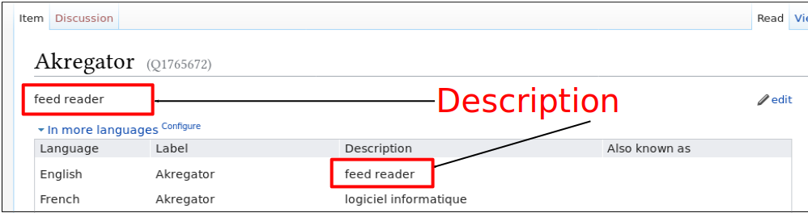
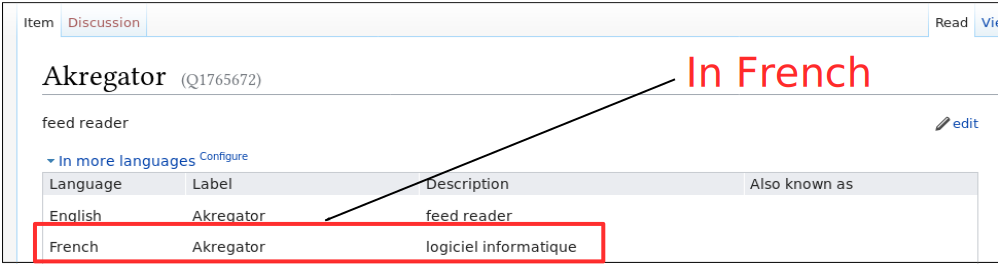
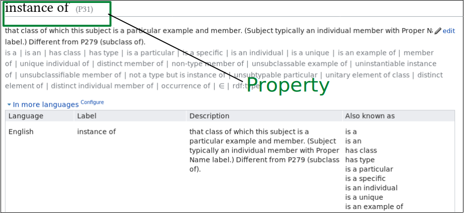
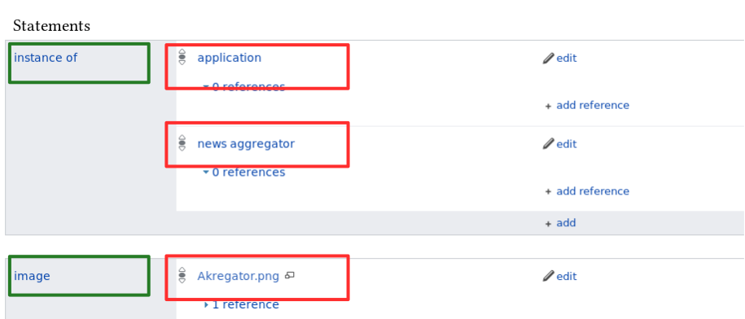
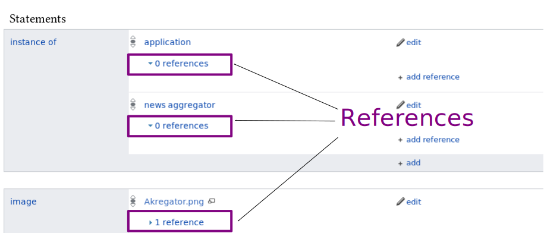

Contributing to Wikidata (and Wikipedia)
John Samuel
XLDB 2017, Royat, 12
th
October, 2017
Wikidata
is
free
,
open
,
linked
,
structured
,
collaborative
and
multilingual




Q-number
https://www.wikidata.org/wiki/
Q1765672
P-number
https://www.wikidata.org/wiki/Property:
P31


Contributing
to
Wikidata
QuickStatements
E.g.,
Q1765672
P31
Q166142
E.g.,
Q1765672
P856
"http://userbase.kde.org/Akregator"
Wikidata
is free, open, linked, structured,
collaborative
Wikidata
is free, open, linked, structured, collaborative and
multilingual
https://www.wikidata.org/wiki/Q1765672
https://www.wikidata.org/wiki/
Q1765672
Q-number
https://www.wikidata.org/wiki/
Q1765672
https://www.wikidata.org/wiki/Q1765672
https://www.wikidata.org/wiki/Q1765672
https://www.wikidata.org/wiki/Property:P31
P-number
https://www.wikidata.org/wiki/Property:
P31
Q-number
and
P-number
2.
What to edit?
instance of
P31
image
P18
logo image
P154
GUI toolkit or framework
P1414
software version
P348
...
All those numbers!!!
https://www.wikidata.org/wiki/Wikidata:WikiProject_Informatics/Software/Properties
Wikidata Projects
WikiProject Informatics/
Software
WikiProject Informatics/
Operating System
WikiProject Informatics/
Programming Language
...
3.
How to edit?
Manual
Quickstatements(2) https://www.wikidata.org/wiki/Help:QuickStatements
HarvestTemplates
Quickstatements
CREATE
LAST Len "Software Name"
LAST Lfr "Nom du logiciel"
LAST Den "description"
LAST Dfr "la description"
LAST P31 Q?
Quickstatements
HarvestTemplates
Import data from Wikipedia Templates (e.g.,
Infoboxes
)
Template Name, Property Name, P-Number
Quickstatements
HarvestTemplates
Writing bots
Bots using
MediaWiki API
Bots using
pywikibot
4.
Wikipedia or Wikidata?
Integration between Wikipedia infoboxes and Wikidata
https://en.wikipedia.org/wiki/Alhambra
Automated article generation
Akregator
is a
news aggregator
application in
KDE
. It was developed in
QT
GUI framework.
Conclusion
Automation and Collaboration
Linguistic Diversity
References
Wikidata in Wikipedia, Mike Peel, Wikimania 2016
Wikimedia Commons
MediaWiki API (https://www.mediawiki.org/wiki/API:Main_page)
Article Placeholder (https://www.mediawiki.org/wiki/Extension:ArticlePlaceholder)
Quickstatements (https://tools.wmflabs.org/wikidata-todo/quick_statements.php)
HarvestTemplates (https://tools.wmflabs.org/pltools/harvesttemplates/)
PetScan (http://petscan.wmflabs.org/)
Pywikibot (https://www.mediawiki.org/wiki/Manual:Pywikibot)
Acknowledgements
Wikimedia Hackathon 2017
Wikidata community members
Q19279214!
Gracias! Thanks! Merci!